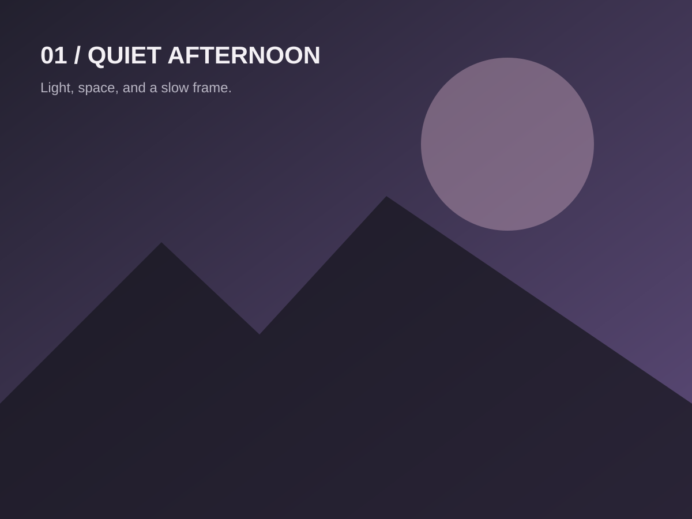
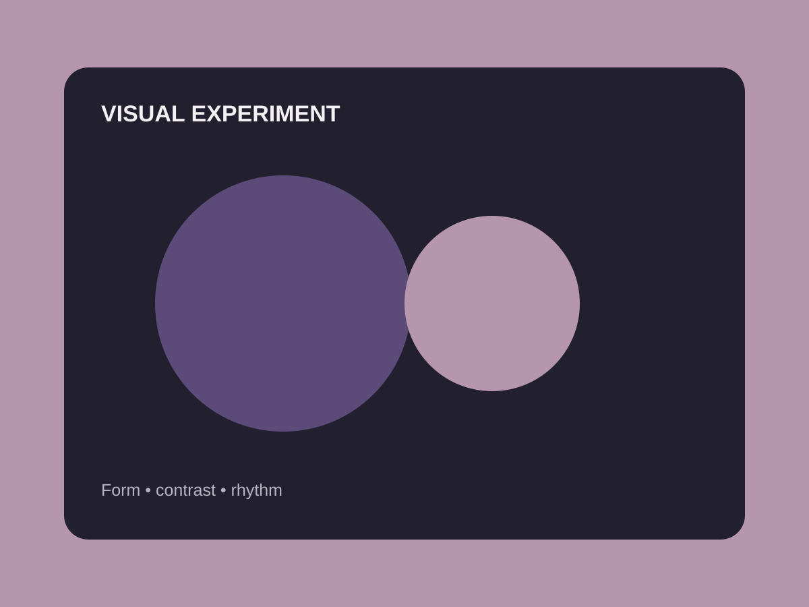
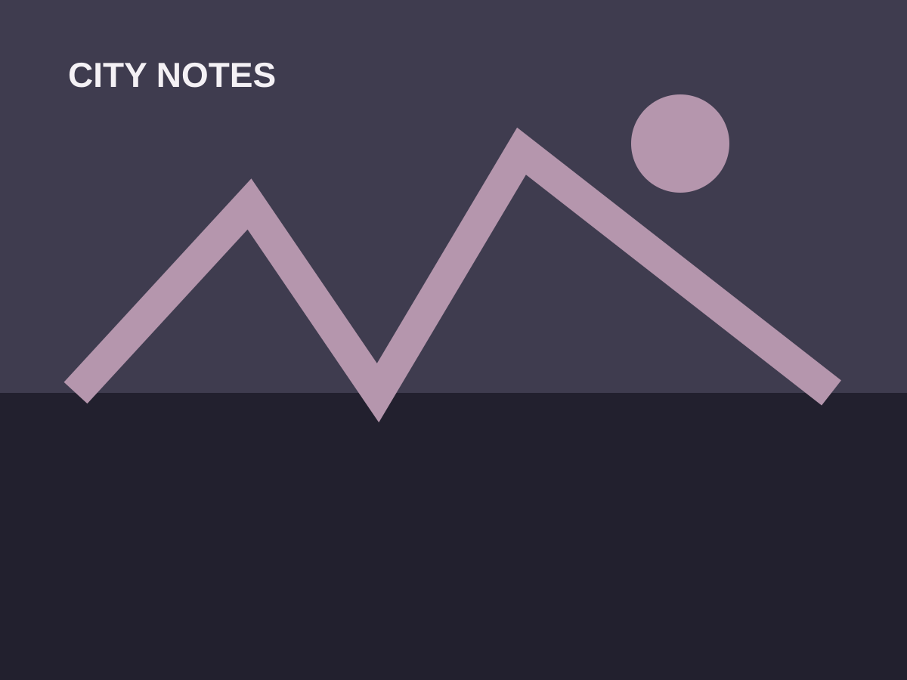
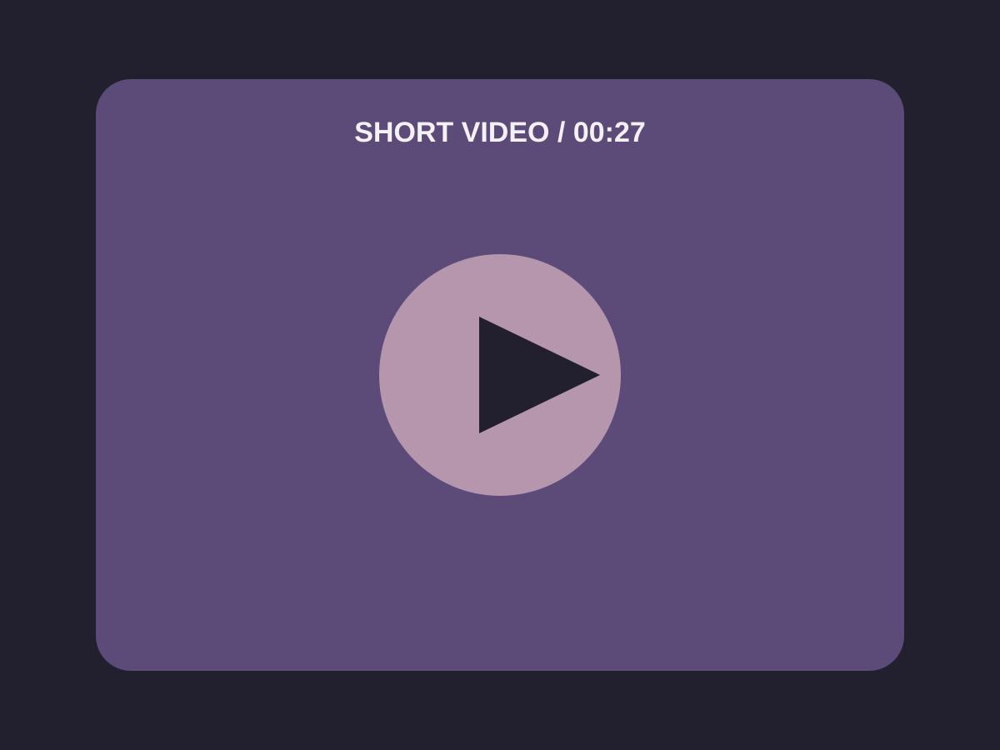
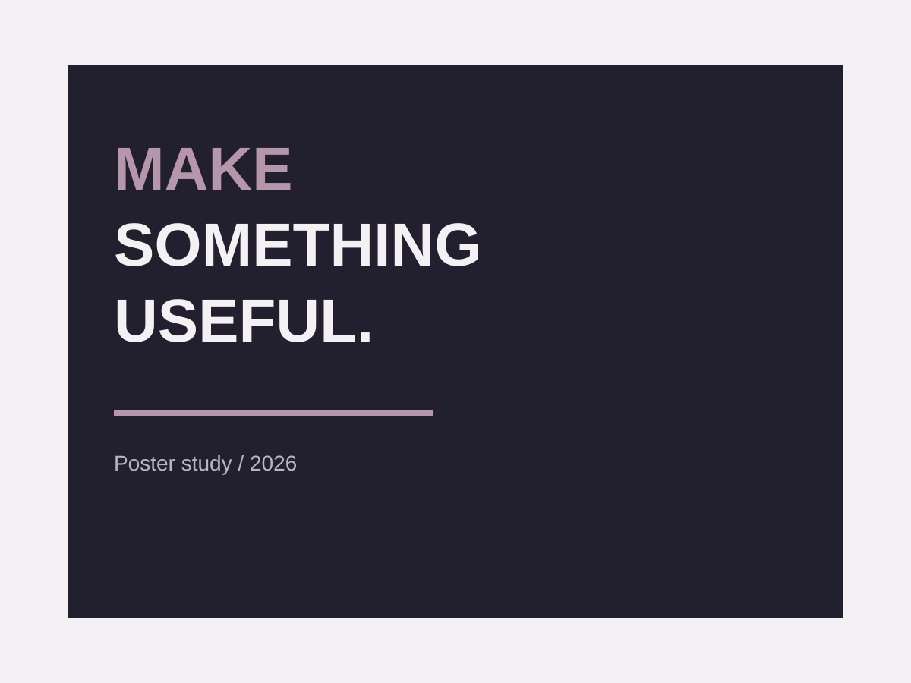
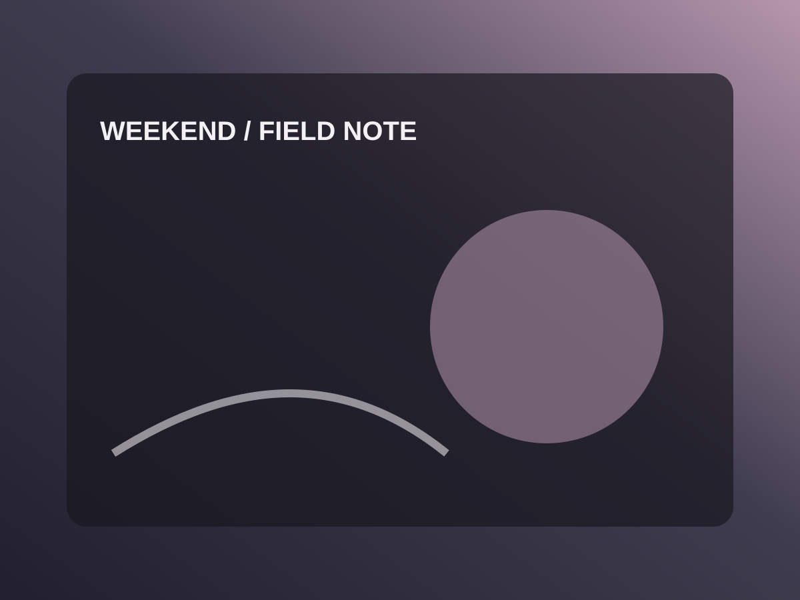

photo
Quiet Afternoon
Light, space, and a slow frame — a simple study of atmosphere.
A flexible space for photography studies, visual experiments, short-form video, and small creative observations.

Light, space, and a slow frame — a simple study of atmosphere.

A composition study built around form, contrast, and rhythm.

A visual journal of shapes, lines, and movement found in the city.

A placeholder-ready short video frame for future motion work.

A concise poster exercise focused on hierarchy and readable typography.

An abstract field note for ordinary moments worth keeping.